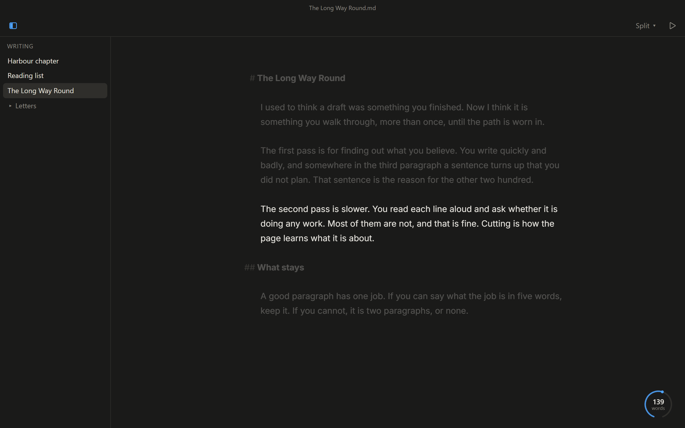
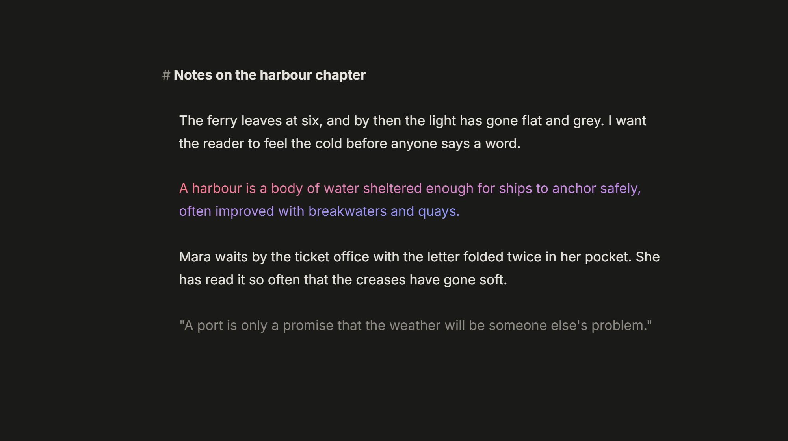
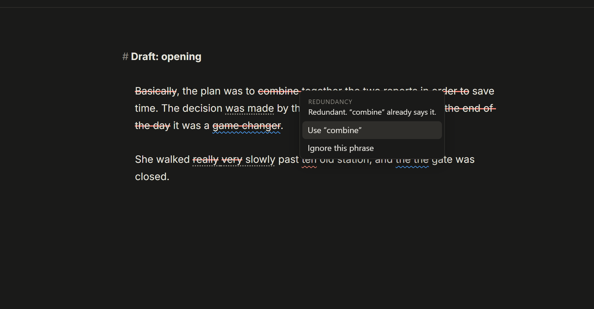
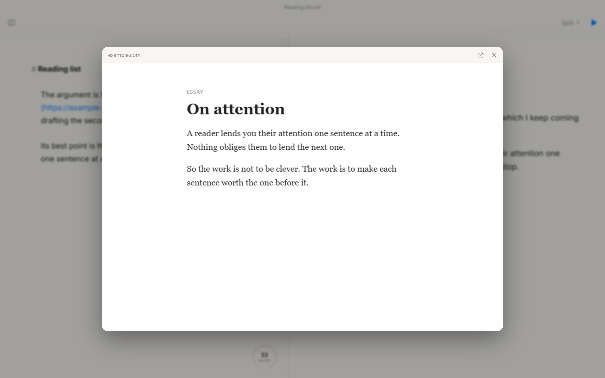
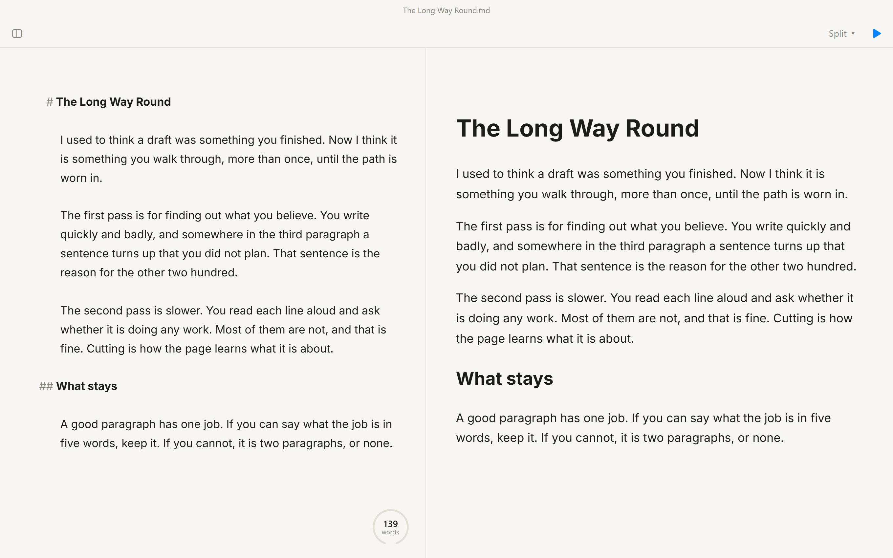

A Markdown editor for Windows
A page, your words, and nothing between them.
Plain Writer opens on your text and keeps out of its way. The toolbar fades when you start typing. What you write is saved as ordinary files in a folder you choose.
Download for Windows Free. No account.

It does less on purpose.
There are no fonts to pick for each heading, no ribbon, no page layout. You write in Markdown, where a
# makes a heading and **two stars** make bold, and you look at the result when you
want to. The rest of the time there is only the sentence you are on.
Next to a word processor
Built for the writing, not for the page.
A word processor is a layout tool. It is very good at the finished document: margins, columns, tracked changes, mail merge. Most of that is in your way while you are still working out what to say.
Plain Writer is for that earlier part. When the piece is done and someone needs a Word file, export one. When one arrives, import it.
| A word processor | Plain Writer | |
|---|---|---|
| On screen while you write | Ribbons, rulers, panes, the page outline | Your text |
| Formatting | Chosen as you go, font by font | A few marks in the text; the look is one setting, decided later |
| Your document is | A file only that kind of program reads well | Plain text that any editor, on any system, can open |
| Help with the prose | Spelling and grammar, often checked online | Spelling, grammar and tightening, checked on your computer |
| Who wrote what | Tracked changes between people | Marks for your words, AI text and quotations |
| Better at | Page layout, comments, working on one file together | Getting the words down, and getting them right |
Typewriter Mode
The line you are writing never moves.
Typewriter Mode holds your line at the middle of the window and moves the page instead, the way paper moves through a typewriter. Your eyes stay in one place for the whole session.
While you type or scroll, the lines near the top and bottom soften into a blur, so what you have just written and what comes next fall out of focus. Stop, move the mouse, and the whole page is sharp again.
Sources
Know which words are yours.
Mark a passage as written by you, produced by an AI, or quoted from somewhere else, and it keeps that colour while you work. Paste as either with one shortcut.
The marks are a view, not a format. They are stored beside the document and never inside it, so the file stays clean text that any other program can open.

Tighten and Grammar Check
A second reader that never leaves your computer.
Tighten strikes through fillers, redundancies and clichés, and puts a quiet dotted line under passive voice, piled-up adverbs and sentences that run long. Grammar Check underlines spelling and grammar.
Right-click a mark to see why it is there and to apply a fix, or step through them with F8. Both run entirely on your machine. Nothing you write is sent anywhere.

Link preview
Glance at a link. Stay on the page.
Click a link and the page it points to opens in a small window over your dimmed document. Read what you needed, click back on your text, and you are typing again with the caret where you left it.
No new tab, no hunting for the window you were in. Your browser is one more click away if you want it.

Plain files
Nothing to export. Nothing to lose.
Every document is a .md text file in a folder you chose. There is no library database and no
sync service in the middle. Back the folder up, put it in version control, or open it in another editor.
Plain Writer saves as you type, keeps backups of earlier versions, and moves deleted files to a trash folder you can take them back from. When a document has to leave, it exports to HTML, Word or PDF.

Also in the box
- Focus dims everything except the sentence or paragraph you are writing.
- Key sounds, if you want them, to go with Typewriter Mode.
- Writing goals fill a small dial in the corner as the words add up.
- Parts of Speech colours nouns, verbs, adjectives and adverbs.
- Review Panel lists every mark in the document, by kind.
- Pictures, tables and maths, a table of contents, and other files embedded by path.
- Five typefaces, five text sizes, and light, dark and true-black themes.
- One Settings screen with every option in view, each showing its current value.
- Word import, for the documents that did not start here.
Started in a minute
- Choose a folder. Any folder on your computer. Plain Writer lists the text files in it and makes a new one if it is empty.
-
Write.
Type. A
#starts a heading,*stars*make emphasis, a blank line starts a paragraph. It saves as you go. - Look when you want to. Ctrl+Alt+P shows the page as it will read. Ctrl+P finds any command or file. All the shortcuts fit on one page.
Free for Windows
Windows 10 or 11, 64-bit. About 11 MB. No account, no trial clock, nothing to pay.
The installer is not code-signed yet, so Windows may ask you to confirm before it runs.